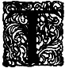

Azul...Primeras páginas
A D. Rubén Darío.
Madrid, 22 de Octubre de 1888.
I

Confieso que al principio, a pesar de la amable dedicatoria con que usted me envía un ejemplar, miré el libro con indiferencia... casi con desvío. El título Azul... tuvo la culpa.
Víctor Hugo dice: L’art c’est l’azur; pero yo no me conformo ni me resigno con que tal dicho sea muy profundo y hermoso. Para mí, tanto vale decir que el arte es lo azul, como decir que es lo verde, lo amarillo o lo rojo. ¿Por qué, en este caso, lo azul (aunque en francés no sea bleu, sino azur, que es más poético) ha de ser cifra, símbolo y superior predicamento que abarque lo ideal, lo etéreo, lo infinito, la serenidad del cielo sin nubes, la luz difusa, la amplitud vaga y sin límites, donde nacen, viven, brillan y se mueven los astros? Pero aunque todo esto y más surja del fondo de nuestro ser y aparezca a los ojos del espíritu, evocado por la palabra azul, ¿qué novedad hay en decir que el arte es todo esto? Lo mismo es decir que el arte es imitación de la Naturaleza, como lo definió Aristóteles: la percepción de todo lo existente y de todo lo posible, y su reaparición o representación por el hombre en signos, letras, sonidos, colores o líneas. En suma: yo, por más vueltas que le doy, no veo en eso de que el arte es lo azul sino una frase enfática y vacía.
Sea, no obstante, el arte azul, o del color que se quiera. Como sea bueno, el color es lo que menos importa. Lo que a mí me dió mala espina fué la frase de Víctor Hugo, y el que usted hubiese dado por título a su libro la palabra fundamental de la frase. ¿Si será éste, me dije, uno de tantos y tantos como por todas partes, y sobre todo en Portugal y en la América española, han sido inficionados por Víctor Hugo? La manía de imitarle ha hecho verdaderos estragos, porque la atrevida juventud exagera sus defectos, y porque eso que se llama genio, y que hace que los defectos se perdonen y tal vez se aplaudan, no se imita cuando no se tiene. En resolución yo sospeché que era usted un Víctor Huguito y estuve más de una semana sin leer el libro de usted.
No bien le he leído, he formado muy diferente concepto. Usted es usted con gran fondo de originalidad y de originalidad muy extraña. Si el libro, impreso en Valparaíso este año de 1888, no estuviese en muy buen castellano, lo mismo podría ser de un autor francés, que de un italiano, que de un turco o de un griego. El libro está impregnado de espíritu cosmopolita. Hasta el nombre y apellido del autor, verdaderos o contrahechos y fingidos, hacen que el cosmopolitismo resalte más. Rubén es judaico, y persa es Darío; de suerte que por los nombres no parece sino que usted quiere ser o es de todos los países, castas y tribus.
El libro Azul... no es en realidad un libro; es un folleto de 132 páginas; pero tan lleno de cosas y escrito por estilo tan conciso, que da no poco en qué pensar y tiene bastante que leer. Desde luego se conoce que el autor es muy joven: que no puede tener más de veinticinco años, pero que los ha aprovechado maravillosamente. Ha aprendido muchísimo, y en todo lo que sabe y expresa muestra singular talento artístico y poético.
Sabe con amor la antigua literatura griega; sabe de todo lo moderno europeo. Se entrevé, aunque no hace gala de ello, que tiene el concepto cabal del mundo visible y del espíritu humano, tal como este concepto ha venido a formarse por el conjunto de observaciones, experiencias, hipótesis y teorías más recientes. Y se entrevé también que todo esto ha penetrado en la mente del autor, no diré exclusivamente, pero sí principalmente, a través de libros franceses. Es más: en los perfiles, en los refinamientos, en las exquisiteces del pensar y del sentir del autor hay tanto de francés, que yo forjé una historia a mi antojo para explicármela. Supuse que el autor, nacido en Nicaragua, había ido a París a estudiar para médico o para ingeniero, o para otra profesión; que en París había vivido seis o siete años, con artistas, literatos, sabios y mujeres alegres de por allá; y que mucho de lo que sabe lo había aprendido de viva voz, y empíricamente, con el trato y roce de aquellas personas. Imposible me parecía que de tal manera se hubiese impregnado el autor del espíritu parisiense novísimo sin haber vivido en París durante años.
Extraordinaria ha sido mi sorpresa cuando he sabido que usted, según me aseguran sujetos bien informados, no ha salido de Nicaragua sino para ir a Chile en donde reside desde hace dos años a lo más. ¿Cómo, sin el influjo del medio ambiente, ha podido usted asimilarse todos los elementos del espíritu francés, si bien conservando española la forma que auna y organiza estos elementos, convirtiéndolos en substancia propia?
Yo no creo que se ha dado jamás caso parecido con ningún español peninsular. Todos tenemos un fondo de españolismo que nadie nos arranca ni a veinticinco tirones. En el famoso abate Marchena, con haber residido tanto tiempo en Francia, se ve el español; en Cienfuegos es postizo el sentimentalismo empalagoso a lo Rousseau, y el español está por bajo. Burgos y Reinoso son afrancesados y no franceses. La cultura de Francia, buena o mala, no pasa nunca de la superficie. No es más que un barniz transparente, detrás del cual se descubre la condición española.
Ninguno de los hombres de letras de la Península, que he conocido yo, con más espíritu cosmopolita, y que más largo tiempo han residido en Francia y que han hablado mejor el francés y otras lenguas extranjeras, me ha parecido nunca tan compenetrado del espíritu de Francia como usted me parece: ni Galiano, ni don Eugenio de Ochoa, ni Miguel de los Santos Alvarez. En Galiano habla como una mezcla de anglicismo y de filosofismo francés del siglo pasado; pero todo sobrepuesto y no combinado con el ser de su espíritu, que era castizo. Ochoa era y siguió siendo siempre archi y ultraespañol, a pesar de sus entusiasmos por las cosas de Francia. Y en Alvarez, en cuya mente bullen las ideas de nuestro siglo, y que ha vivido años en París, está arraigado el ser del hombre de Castilla, y en su prosa recuerda el lector a Cervantes y a Quevedo, y en sus versos a Garcilaso y a León, aunque así en versos como en prosa, emita él siempre ideas más propias de nuestro siglo que de los que pasaron. Su chiste no es el esprit francés, sino el humor español de las novelas picarescas y de los autores cómicos de nuestra peculiar literatura.
Veo, pues, que no hay autor en castellano más francés que usted, y lo digo para afirmar un hecho sin elogio y sin censura. En todo caso, más bien lo digo como elogio. Yo no quiero que los autores no tengan carácter nacional; pero yo no puedo exigir de usted que sea nicaragüense, porque ni hay ni puede haber aún historia literaria, escuela y tradiciones literarias en Nicaragua. Ni puedo exigir de usted que sea literariamente español, pues ya no lo es políticamente, y está además separado de la madre patria por el Atlántico, y más lejos en la república donde ha nacido, de la influencia española que en otras repúblicas hispanoamericanas. Estando así disculpado el galicismo de la mente, es fuerza dar a usted alabanzas a manos llenas por lo perfecto y profundo de ese galicismo; porque el lenguaje persiste español, legítimo y de buena ley, y porque si no tiene usted carácter nacional, posee carácter individual.
En mi sentir hay en usted una poderosa individualidad de escritor, ya bien marcada, y que, si Dios da a usted la salud que yo le deseo y larga vida, ha de desenvolverse y señalarse más con el tiempo en obras que sean gloria de las letras hispanoamericanas.
Leídas las 132 páginas de Azul... lo primero que se nota es que está usted saturado de toda la más flamante literatura francesa: Hugo, Lamartine, Musset, Baudelaire, Leconte de Lisle, Gautier, Bourget, Sully-Prouhomme, Daudet, Zola, Barbey d’Aurevilly, Catulle Mendes, Rollinat, Goncourt, Flaubert y todos los demás poetas y novelistas han sido por usted bien estudiados y mejor comprendidos. Y usted no imita a ninguno: ni es usted romántico, ni naturalista, ni neurótico, ni decadente, ni simbólico, ni parnasiano. Usted lo ha revuelto todo: lo ha puesto a cocer en el alambique de su cerebro, y ha sacado de ello una rara quinta esencia.
Resulta de aquí un autor nicaragüense, que jamás salió de Nicaragua sino para ir a Chile, y que es autor tan a la moda de París y con tanto chic y distinción, que se adelanta a la moda y pudiera modificarla e imponerla.
En el libro hay Cuentos en prosa y seis composiciones en verso. En los cuentos y en las poesías todo está cincelado, burilado, hecho para que dure, con primor y esmero, como pudiera haberlo hecho Flaubert, o el parnasiano más atildado. Y, sin embargo, no se nota el esfuerzo, ni el trabajo de la lima, ni la fatiga del rebuscar: todo parece espontáneo y fácil y escrito al correr de la pluma, sin mengua de la concisión, de la precisión y de la extremada elegancia. Hasta las rarezas extravagantes y salidas de tono, que a mí me chocan, pero que acaso agraden en general, están hechas adrede. Todo en el librito está meditado y criticado por el autor, sin que su crítica previa o simultánea de la creación perjudique al brío apasionado y a la inspiración del que crea.
Si se me preguntase qué enseña su libro de usted y de qué trata, respondería yo sin vacilar: no enseña nada, y trata de nada y de todo. Es obra de artista, obra de pasatiempo, de mera imaginación. ¿Qué enseña o de qué trata un dije, un camafeo, un esmalte, una pintura o una linda copa esculpida?
Hay, sin embargo, notable diferencia en toda escultura, pintura, dije y hasta música, y cualquier objeto de arte cuyo material es la palabra. El mármol, el bronce y el sonido no diré yo que sutilizando mucho no puedan significar algo de por sí; pero la palabra, no sólo puede significar, sino que forzosamente significa ideas, sentimientos, creencias, doctrinas y todo el pensamiento humano. Nada más factible, a mi ver (acaso porque soy poco agudo), que una bella estatua, un lindo dije, un cuadro primoroso, sin transcendencia o sin símbolos; pero ¿cómo escribir un cuento o unas coplas sin que deje ver el autor lo que niega, lo que afirma, lo que piensa y lo que siente? El pensamiento en todas las artes pasa con la forma desde la mente del artista a la substancia o materia del arte; pero en el arte de la palabra, además del pensamiento que pose el arte en la forma, la substancia o materia del artista es pensamiento también y pensamiento de artista. La única materia extraña al artista es el Diccionario, con las reglas gramaticales que siguen las voces en su combinación; pero como ni palabras ni combinaciones de palabras pueden darse sin sentido, de aquí que materia y forma sean en poesía y en prosa creación del escritor o del poeta: sólo quedan fuera de él, digámoslo así, los signos hueros, o sea abstrayendo lo significado.
De esta suerte se explica cómo, con ser su libro de usted de pasatiempo, y sin propósito de enseñar nada, en él se ven patentes las tendencias y los pensamientos del autor sobre las cuestiones más trascendentales. Y justo es que confesemos que los dichos pensamientos no son ni muy edificantes ni muy consoladores.
La ciencia de experiencia y de observación ha clasificado cuanto hay, y ha hecho de ello hábil inventario. La crítica histórica, la lingüística y el estudio de las capas que forman la corteza del globo han descubierto bastante de los pasados hechos humanos que antes se ignoraban; de los astros que brillan en la extensión del éter se sabe muchísimo; el mundo de lo imperceptiblemente pequeño se nos ha revelado merced al microscopio; hemos averiguado cuántos ojos tiene tal insecto y cuántas patitas tiene tal otro: sabemos ya de qué elementos se componen los tejidos orgánicos, la sangre de los animales y el jugo de las plantas: nos hemos aprovechado de agentes que antes se substraían al poder humano, como la electricidad; y gracias a la estadística, llevamos minuciosa cuenta de cuánto se engendra y de cuánto se devora; y si ya no se sabe, es de esperar que pronto se sepa la cifra exacta de los panecillos, del vino y de la carne que se come y se bebe la humanidad de diario.
No es menester acudir a sabios profundos: cualquier sabio adocenado y medianejo de nuestra edad conoce hoy, clasifica y ordena los fenómenos que hieren los sentidos corporales, auxiliados estos sentidos por instrumentos poderosos que aumentan su capacidad de percepción. Además se han descubierto, a fuerza de paciencia y de agudeza y por virtud de la dialéctica y de las matemáticas, gran número de leyes que dichos fenómenos siguen.
Natural es que el linaje humano se haya ensoberbecido con tamaños descubrimientos e invenciones; pero, no sólo en torno y fuera de la esfera de lo conocido y circunscribiéndola, sino también llenándola en lo esencial y substancial, queda un infinito inexplorado, una densa e impenetrable obscuridad, que parece más tenebrosa por la misma contraposición de la luz con que ha bañado la ciencia la pequeña suma de cosas que conoce. Antes, ya las religiones con sus dogmas, que aceptaba la fe, ya la especulación metafísica con la gigante máquina de sus brillantes sistemas, encubrían esa inmensidad incognoscible, o la explicaban y la daban a conocer a su modo. Hoy priva el empeño de que no haya ni metafísica ni religión. El abismo de lo incognoscible queda así descubierto y abierto, y nos atrae y nos da vértigo, y nos comunica el impulso, a veces irresistible, de arrojarnos en él.
La situación, no obstante, no es incómoda para la gente sensata de cierta ilustración y fuste. Prescinden de lo transcendente y de lo sobrenatural para no calentarse la cabeza ni perder el tiempo en balde. Esta inclinación les quita no pocas aprensiones y cierto miedo, aunque a veces les infunde otro miedo y sobresalto fastidiosos. ¿Cómo contener a la plebe, a los menesterosos, hambrientos e ignorantes, sin ese freno que ellos han desechado con tanto placer? Fuera de este miedo que experimentan algunos sensatos, en todo lo demás no ven sino motivo de satisfacción y parabienes.
Los insensatos, en cambio, no se aquietan con el goce del mundo, hermoseado por la industria e inventiva humanas, ni con lo que se sabe, ni con lo que se fabrica, y anhelan averiguar y gozar más.
El conjunto de los seres, el Universo, todo cuanto alcanza a percibir la vista y el oído, ha sido, como idea, coordinado metódicamente en una anaquelería o casillero para que se comprenda mejor; pero ni este orden científico, ni el orden natural, tal como los insensatos le ven, les satisface. La molicie y el regalo de la vida moderna los han hecho muy descontentadizos.
Y así ni del mundo tal como es, ni del mundo tal como lo concebimos, se forman idea muy aventajada. Se ve en todo faltas, y no se dice lo que dicen que dijo Dios: Que todo era bueno. La gente se lanza con más frecuencia que nunca a decir que todo es malo; y en vez de atribuir la obra a un artífice inteligentísimo y supremo, la supone obra de un puritano inconsciente de fabricar cosas que hay ab eterno en los átomos, los cuales tampoco se sabe a punto fijo lo que sean.
Los dos resultados principales de todo ello en la literatura de última moda son:
1.º Que se suprima a Dios o que no se le miente sino para insolentarse con él, ya con reniegos y maldiciones, ya con burlas y sarcasmos.
Y 2.º Que en este infinito tenebroso e incognoscible perciba la imaginación, así como en el éter, nebulosas o semilleros de astros, fragmentos y escombros de religiones muertas, con los cuales procura formar algo como ensayo de nuevas creencias y de renovadas mitologías.
Estos dos rasgos van impresos en su librito de usted: El pesimismo, como remate de toda descripción de lo que conocemos, y la poderosa y lozana producción de seres fantásticos, evocados o sacados de las tinieblas de lo incognoscible, donde vagan las ruinas de las destrozadas creencias y supersticiones vetustas.
Ahora será bien que yo cite muestras y pruebe que hay en su libro de usted, con notable elegancia, todo lo que afirmo; pero esto requiere segunda carta.
Hasta aquí las primeras páginas. Para seguir leyendo, descarga el libro completo, gratis:
¿Cuál elegir? El PDF se abre directo en el navegador, en cualquier celular o computador. El EPUB queda en Descargas y se lee con una aplicación de lectura (Google Play Libros en Android, Libros en iPhone, Kindle o Kobo), que deja agrandar la letra.